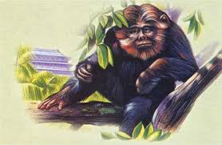

Evidence

The most notorious video piece of evidence that we have of Bigfoot is the 1967 film by Roger Patterson and Robert Gimlin. The two men were riding horses when they claimed to have spotted a hairy creature walking on two feet. The video, which you likely have seen or atleast images of, shows Bigfoot walking across a river, turning to look at the camera, then continues walking. The authenticity of this film, however, is still up for debate.
Aside from the famous Patterson & Gimlin film, there are a few other videos that often come up in Bigfoot discussions. The Freeman footage, filmed by Paul Freeman (1994) from Washington State and the Marble Mountain footage (2000) from a California Youth Group gone camping, both show tall, humanlike figures moving through the woods, though many remain skeptical about their authenticity. The Bigfoot Field Researchers Organization (BFRO) keeps one of the most extensive databases of sightings and field reports in North America, offering a detailed look at decades of encounters. The real question is, how are there so many reported sightings, but no concrete proof? There's the possibility of multiple Bigfoots or Bigfoot may just be the best hide and seek player known to man.
Where He's been spotted

☞ People have claimed to have seen Bigfoot all across the nation and even variations of him all throughout the world. In the past, Bigfoot has been said to be spotted in dark forests throughout the Pacific Northwest. In 2024, according to satelliteinternet.com, Bigfoot was spotted the in Washington with 676 reported sightings. Next was California with 445, then Florida with 328, and then Ohio with 302 reported sightings. In Washington, it was also noted by satelliteinternet.com in 2024, that for every 100,000 people there are 8.9 Bigfoot sightings, giving the highest probability you’ll see Bigfoot in the Pacific Northwest state. Outside of the United States, claims have come far and wide from Asia, South Africa, and Australia.
Mysterious Noises
Many campers and forest goers have claimed to have heard mysterious noises, not coming from the obvious forest animal like bears, wolves, or critters, but from something else... It’s been said that Bigfoot can make an innumerable amount of noises including loud knocks, screams, howls, hums, whistles, and more. He’s a creature with a wide range, that’s for sure. Some of the most well known Bigfoot recordings are the "Sierra Sounds" and the "Ohio Howl". The Sierra Sounds were heard by Ron Morehead and Al Berry in the 1970’s at a campsite located in Sierra, Nevada where the audio features strange, speech-like chatter. According to Squatchable.net, “Dr. Arlin Stoltzfus, an electrical engineer, conducted spectral analysis and concluded that the sounds exceed the frequency and amplitude capabilities of human vocal chords”(Squatchable.net). Meaning that the speech was much too high to be human. The Ohio Howl, captured by Matt Moneymaker in 1994 Columbiana County, Ohio, sounds to be a rising and falling howl.The next time you are out in the forest, listen closely and you may hear the presence of Bigfoot nearby.
The Sierra Sounds and Ohio Howl
Bigfoot in Different Cultures
The Yeti

The Yeren
The Yowie